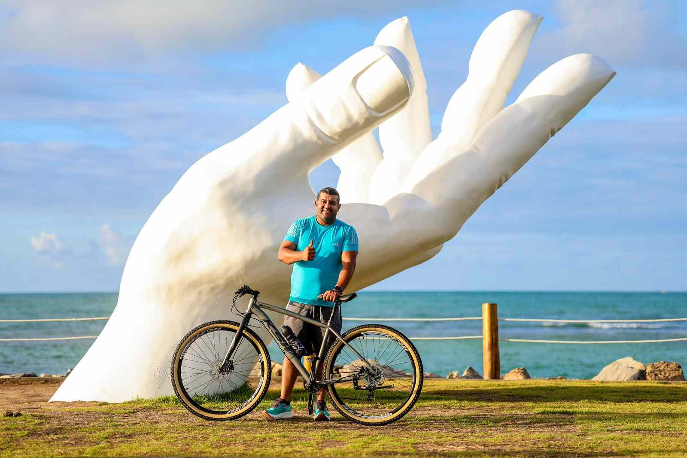

WDD 130 | Marlon Smith Dantas dos Santos

Olá! Meu nome é Marlon Smith e moro em Maceió, Alagoas. Gosto de pedalar, caminhar na orla e estou estudando Desenvolvimento Web pelo curso WDD 130 da BYU Pathway. Sou membro da igreja desde meus 11 anos de idade, servi uma missão de tempo integral em 2011, quando tinha 25 anos.
Sai para servir missão quando já tinha 25 anos porque até aquele momento eu achava que a missão não seria para mim sempre tive a certeza de que era algo maravilhoso, mas pude sentir de verdade como é poder fazer uma mudança na vida das pessoas